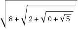

RIES - Find Algebraic Equations, Given Their Solution
First page . . . Back to page 4 . . . Forward to page 6
The Broken Calculator
This one is a bit like the "forgotten identities" example above, and is based on a problem commonly attributed to Donald J. Newman [3]:
Derive the operations +, -, x, and / from - and reciprocal.
It's like we have a calculator with broken +, x and / keys but we'd still like to use it to add, multiply and divide. How?
Solving this is conceptually similar to building up a complete LISP function library from 0, successor, and comparison functions (see my functional computation article), but we can use RIES to help us discover some of the functions.
We start with the "reciprocal function" *f(x) = 1/x and the subtraction function f(a,b) = a-b. The first (fairly obvious) step is to find a way to do addition. There are only a few simple steps. We can get the constant 0 by subtracting anything from itself:
0 = x-x
Then we get the negation function by subtracting any value from 0:
-a = 0-a
Now we have 0, negation, and subtraction. With these we can add any two values:
a+b = a-(-b)
Substituting the 0 and negation functions, we have:
a+b = a-((x-x)-b)
where x can be anything.
To show how this can be derived with ries, consider the task of trying to compute e+π using just e, π, and the subtraction function. We just showed that the sum a+b is equivalent to a-((x-x)-b) where x can be anything, including either a or b. So the sum e+π can be expressed as any of the following:
e+π = e-((e-e)-π)
e+π = e-((π-π)-π)
π+e = π-((e-e)-e)
π+e = π-((π-π)-e)
Let's use ries to discover an answer. Here we need to use the --one-sided option to force everything over to the right side of theequation, and the -S option to specify the permitted "symbol set".The ries symbols we need are e for e, p for π,- for subtraction, and r for reciprocal. Using a normal calculatorwe find that e+π is 5.8598744820488, then we ask ries to express this in terms of the four symbols:
ries --one-sided --max-match-distance 1e-9 -x -l5 5.8598744820488 -Sep-r x = pi-((pi-e)-pi) for x = 5.85987448204884 {88} x = e-1/((pi-1/(pi-(pi-1/pi)))-1/pi) for x = 5.85987448204882 {154}The first answer is what we were looking for, and we can easily plug in other numbers for π and e and see that, in general, a+b = a-((a-b)-a) which turns out to be a little different from the solution we derived ourselves above.
The second ries answer involving reciprocals works too, but is needlessly complex (for example, note that π-(π-1/π) simplifies to just 1/π) and happens because ries sometimes encounters numerical round-off error and treats two results as being equivalent only if they produce exactly the same calculated result.
Multiplication and division are more elusive, but the key is to not try to go to them directly. Let's try to find some other functions that a calculator might provide. Here are some simple functions:
f(x) = x+1
f(x) = 2x
f(x) = x/2
f(x) = x2
One of these, f(x)=2x, is trivial given that we already have addition. The x/2 function turns out to be pretty easy too. Here is an example telling ries to compute π/2, using the -S option tospecify that the only allowed symbols are π and the functions we've already derived above (reciprocal, + and -):
ries 1.5707963267949 --one-sided --max-match-distance 1e-9 -x -l5 -Spr+- x = 1/(1/pi+1/pi) for x = 1.5707963267949 {68}So we have a way to do x/2, namely 1/(1/x+1/x).
The seemingly simple x+1 is elusive. ries finds nothing unless we allow it to use the constant 1:
ries --one-sided --max-match-distance 1e-9 -x -l5 4.1415926535898 -Spr+- {searches forever...} ries --one-sided --max-match-distance 1e-9 -x -l5 4.1415926535898 -S1pr+- x = 1+pi for x = 4.14159265358979 {43}A big break comes when we use ries to look at f(x) = x2. Here are examples using (phi)2, e2 and π2:
ries --one-sided --max-match-distance 1e-9 -x -l5 2.6180339887499 -S1f+-r x = 1+phi for x = 2.61803398874989 {47} x = 1/(1/(1/(1-phi)+1)+1+1) for x = 2.6180339887499 {111} ries --one-sided --max-match-distance 1e-9 -x -l5 7.3890560989306 -S1e+-r x = e-1/(1/(1-e)+1/e) for x = 7.38905609893065 {108} ries --one-sided --max-match-distance 1e-9 -x -l5 9.8696044010894 -S1p+-r x = pi-1/(1/(1-pi)+1/pi) for x = 9.86960440108936 {102}In the Φ2 case we got Φ=1+Φ, which is one of the well-known special identity formulas for Φ. The other Φ2 answer is related to some less obvious Φ identities. So Φ doesn't help us — however, for e2 and π2, ries gave us two similar answers. This suggests that we should look at the function:
f(x) = x-1/(1/(1-x)+1/x)
Part of this can be simplified:
1/(1-x) + 1/x = x/x(1-x) + (1-x)/x(1-x)
= 1/x(1-x)
then we substitute this back in and simplify:
f(x) = x-1/(1/(1-x)+1/x)
= x - 1/(1/x(1-x))
= x - x(1-x)
= x - (x-x2)
= x2
So we now have the "squaring function" f(x) = x2, which in ries is the symbol 's'.
With add, subtract, reciprocal, and the squaring function, can we multiply? Sadly, these searches for pi * e (Mmmm, pie!) and pi/e do not work:
ries 8.5397342226736 --one-sided --max-match-distance 1e-9 -x -l6 -Ssepr+- {searches forever...} ries 1.1557273497909 --one-sided --max-match-distance 1e-9 -x -l6 -Ssepr+- {searches forever...}But we know we can do 2x and x/2 pretty easily, so let's try to get 2π/e:
ries 2.3114546995818 --one-sided --max-match-distance 1e-9 -x -l6 -Ssepr+- x = (1/e+pi)^2-(pi^2+1/e^2) for x = 2.31145469958184 {129}Now we're getting somewhere. Similar ries searches for 2Φ/e quickly show that it is (1/e+Φ)2-(Φ^2+1/e^2) leading to the general solution:
2a/b = (1/b+a)2-(a^2+1/b^2)
which is easily verified by algebra. We can combine this formula for 2a/b with the previously derived formula for x/2 to get an a/b formula.
Once we have division, we're home free. If your brain burned out from all of the above, ries will readily show that the product ab is a/(1/b).
Enlightened Discovery
I wrote a simple routine to compute the Lanczos approximation for the Gamma function using the simplest set of Lanczos coefficients I could find. It gave me the following approximate values:
Gamma(0.5) ≈ 1.772453850902053
Gamma(1.0) ≈ 1.000000000000000
Gamma(1.5) ≈ 0.886226925452798
Gamma(2.0) ≈ 1.000000000000000
Gamma(2.5) ≈ 1.329340388179131
Gamma(3.0) ≈ 2.000000000000000
Gamma(3.5) ≈ 3.323350970447838
Gamma(4.0) ≈ 5.999999999999997
Gamma(4.5) ≈ 11.631728396567436
Gamma(5.0) ≈ 23.999999999999993
Gamma(5.5) ≈ 52.342777784553668
Gamma(6.0) ≈ 119.999999999999872
Gamma(6.5) ≈ 287.885277815044162
Gamma(7.0) ≈ 719.999999999998863
The crudeness of the Lanczos approximation can be seen in the integer arguments: Gamma(4.0) should be exactly 3! which is 6. Similar errors are seen in Gamma(5.0) and higher.
I already knew each of the following things about the Gamma function:
- Gamma(x) is equal to the Factorial of x-1 (for any positive integer x),
- Gamma(x+1) is equal to x times Gamma(x) (for all x, not just integers),
- Gamma(x+1/2) has an exact formula that uses π,
and I wanted to figure out the exact formula involving π, but just for fun, I wanted to do it without applying the induction formula Gamma(x+1) = x Gamma(x).
Using ries to look at the half-integer arguments:
ries 1.772453850902053 x^2 = pi for x = T + 3.46301e-12 {38} ries 0.886226925452798 2 x = sqrt(pi) for x = T - 4.00791e-14 {55} ries 1.329340388179131 x/sqrt(pi) = 3/4 for x = T + 5.77316e-15 {79} ries 3.323350970447838 x/sqrt(pi) = 2-1/8 for x = T + 3.9968e-15 {87} ries 11.631728396567436 x/sqrt(pi)+1 = (3-1/4)^2 for x = T + 1.24345e-14 {109} ries -l3 52.342777784553668 x/(1-1/8^2) = 5*6 sqrt(pi) for x = T - 1.49214e-13 {136}In some cases ries puts the √π on the left side, in other cases on the right. One of the equations (the first) does not have √π at all, but it's easy to see that it does once you solve for x. Everything else in the formulas amounts to simple ratios of integers: for example, "x/sqrt(pi) = 2-1/8" is x/√π = 15/8 or x = 15√π/8. Solving them all for x, getting the fractions into reduced form, and factoring the numerator of each fraction, we get:
Gamma(1/2) = √π
Gamma(3/2) = √π / 2
Gamma(5/2) = 3 √π / 4
Gamma(7/2) = 5×3 √π / 8
Gamma(9/2) = 7×5×3 √π / 16
Gamma(11/2) = 9×7×5×3 √π / 32
the pattern for Gamma(n+1/2) is then easy to see. The general formula is:
Gamma(n+1/2) = (2n-1)!! √π / 2n
using the Double factorial to get the products of odd numbers (Sloane's A001147).
Exact Formula for Lucas Numbers
Here's another example of "enlightened discovery". The Lucas numbers, (OEIS sequence A0032, my MCS13770842) are the numbers: 2, 1, 3, 4, 7, 11, 18, 29, 47, 76, 123, 199, 322, ... with the simple recurrence relation Ln = Ln-1 + Ln-2.
I know that these numbers are close to powers of Φ (the golden ratio), but that it's not exact. For example, Φ7 is 29.034441853..., a bit bigger than the Lucas number L7=29. I also know that there is an exact formula for these numbers. Thus I want to find a precise formula like this:
Ln = Φn + somethingelse
First, I wrote this small computer program in the Hypercalc dialect of BASIC:
1 ' Calculate powers of Phi (the golden ratio) and the Lucas numbers, 2 ' and display a table including the difference between the two 10 l0=2; l1=1; 20 for i=1 to 25; 30 print i, phi^i, l1, l1-phi^i 40 l2=l0+l1; l0=l1; l1=l2; 50 next i 999 endThe program gives these values:
|
The 4th column is the "adjustment" that must be added to Φn to get an exact formula for Ln. You may already be able to guess the formula for this adjustment, but let's use ries to discover it:
ries -s -0.6180339887498 x = -(1/phi) ries -s 0.3819660112501 x = (1/phi)^2 ries -s -0.2360679774997 x = 2-sqrt(5) ries -s 0.1458980337503 x = (1/phi^2)^2Except for -0.2360679774997, the answers fit a pattern: all are -1n/Φn = -Φ-n. We can quickly verify that 2-√5 is also equal to -Φ-3. This gives us an exact formula for the Lucas numbers:
Ln = Φn + (-Φ)-n
Debugging
ries is also sometimes of use in finding errors in formulas or in calculations using a given formula.
I was looking at a problem with Hypercalc's factorial function, which is based on the Stirling series. For some values of N, Hypercalc's answer for the factorial of N was wrong. For example, when N is a googol, I was getting 2.2051589684...×10995657055180967481723488710810833949177056029941963334338855462168341353507911292252707750506615682566 instead of the correct answer 1.6294043324...×10995657055180967481723488710810833949177056029941963334338855462168341353507911292252707750506615682567. The exponents differ in the last digit, and the initial digits (the "mantissa") are completely different. Hypercalc's answer was too small, by a ratio of about 16.294/2.205 = 7.389.
(I can hear some of you now... you're saying, hey what's the big deal? It's ten to the power of 99 googol, and you're worried about a factor of seven? I don't think anybody's going to notice. But I notice. I love big numbers...)
Anyway, putting this ratio 7.389056099 into ries shows that it is e2. This gave me a clue that helped me find the problem. Since Hypercalc performs most of the factorial calculation using natural logarithms, the intermediate result was off by almost exactly 2. I soon found a problem that was causing terms that should be nearly 0.0 to be nearly 1.0 instead.
In a related investigation, a value was found to be off by a ratio of about 1.58323701466. Putting this into ries revealed that it was the 4th root of 2π. There is a formula involving √2π, but apparently the square root had been taken twice by mistake.
Kolmogorov Complexity
As mentioned above, the ries "complexity" score is a form of Kolmogorov complexity so it can be used as a crude way of estimating the complexity of expressions or equations, provided that you already know the root of the equation. For example, phi (the Golden ratio) is sometimes considered a symbol in its own right, and would have a "complexity" of 1. We can use ries to demonstrate this by using the -F0 (postfix outputformat) and -s (solve for x) options:
ries 1.61803398874989 -s -F0 ... x = f for x = T + 4.88498e-15 {33}The solution x=Φ has one symbol on the right-hand-side, so Φ has a "Kolmogorov complexity" of 1. What if we're not allowed to use the builtin symbol f representing Φ?
ries 1.61803398874989 -Nf -s -F0 ... x = 5qxr- for x = T + 5.10703e-15 {68}The solution given is 5 symbols (5qxr-) or x = √5-1/x inmore normal notation, reflecting one of the ways to define Φ in terms of itself. To get the more standard definition of Φ we need to use -Ox (to allow only one x per equation) and exclude theC symbol (cosine) because Φ is exactly twice the cosine of π/5.Then we get:
ries 1.61803398874989 -NfC -Ox -s -F0 ... x = 15q+2/ for x = T + 4.88498e-15 {73}which uses 6 symbols to express Φ as (1+√5)/2.
If you care more about the number of times a particular symbol is used, you can combine ries with some UNIX tools. In this example we use ries to generate the terms of the sequence A5245, which measures the "complexity" of the integers by counting how many 1's it takes to make the number using just addition and multiplication. For example, the "complexity" of 6 is 5, because you can make 6 from five 1's like so: 6=(1+1+1)×(1+1).
ries --one-sided -S1*+ 6 | sed 's/{.*}//' | grep exact | tr -cd 1 | wc -c 5 ries --one-sided -S1*+ 7 | sed 's/{.*}//' | grep exact | tr -cd 1 | wc -c 6 ries --one-sided -S1*+ 8 | sed 's/{.*}//' | grep exact | tr -cd 1 | wc -c 6 ries --one-sided -S1*+ 9 | sed 's/{.*}//' | grep exact | tr -cd 1 | wc -c 6 ries --one-sided -S1*+ 10 | sed 's/{.*}//' | grep exact | tr -cd 1 | wc -c 7 ries --one-sided -S1*+ 11 | sed 's/{.*}//' | grep exact | tr -cd 1 | wc -c 8 ries --one-sided -S1*+ 12 | sed 's/{.*}//' | grep exact | tr -cd 1 | wc -c 7Using --one-sided makes it very slow for larger target numbers, but ries gets pretty close to the right answer if you replace the --one-sided option with -ie (integer subexpressions, stop on exactmatch) and allow division:
ries -ie -S1/*+ 14 | sed 's/{.*}//' | grep exact | tr -cd 1 | wc -c 8Some Examples for Pi Day 2013
In advance of Pi Day in 2013, I decided it would be fun to tweet a series of successive approximations to Pi. Following is the full set.
Some Examples for Pi Day 2015
To celebrate "Pi Day of fhe Century" (on 3/14/15 at 9:26:53!) I was going to make a new set of approximation examples, but I soon realised I was mostly just re-inventing examples I had done in 2013. A few were revised for 2015, as noted in each section below.
Pi Day: the First Approximation
Robert Munafo @mrob_27
Celebrate #PiDay, use #RIES to make classical approximations. Pi is
about 3+sqrt(1/50) mrob.com/pub/ries/index... #maths #numbers
The first example is a "Babylonian" approximation (error: 1.17×10-4)
ries is good at finding "classical" approximations, the type of formulas that were used in ancient times. In this ries command, we ask it to "solve for x" with the -s option, and to limit itssearch to constructible numbers with the -c option (thisprevents ries from using advanced functions like logarithms, exponents, etc. and also prevents it from using π itself because π is not constructible). The ries command is:
ries 3.14159 -c -s
After a few crude approximations we get:
x = 1/(5√2)+3 = 3.14142135623731...
This answer is equivalent to 3+√2/10, 3+√1/50, or 3+1/√50, any of which are easy to remember and may have been used in ancient times.
Pi Day: the Second Approximation
Robert Munafo @mrob_27
By excluding all digits, "ries 20 -N123456789" finds Gelfond's constant
e^pi-pi. mrob.com/pub/ries/index... Celebrate #PiDay #maths #numbers
This example involves Gelfond's constant (error: 4.1×10-5)
There is a quirky fact, highlighted in xkcd 217, that eπ-π is almost exactly 20. ries discovers this fact easily just by telling it to not use any digits. Here is the ries command:
ries 20 -N123456789 Your target value: T = 20 mrob.com/ries x+pi = e^pi for x = T - 0.000900021The Gelfond's constant coincidence is often expressed as "eπ-π ≈ 20", and ries will give us this if we tell it to solve for x:
ries 20 -N123456789 -s -x
which gives the magic formula:
x = eπ-π = 19.9990999791895...
Let's see how well this formula works for approximating π. We turn the equation around by replacing π with the variable x, and making 20 an exact constant:
20 = ex-x
To solve this for x, we need an equation solver. This is the opposite of ries (which is is an "inverse" solver!). One option is to use WolframAlpha and put in "<a href="http://www.wolframalpha.com/input/?i=E%5Ex-x%3D20">E^x-x=20</a>";on the resulting page click the button saying "Approximate form", then More digits; WolframAlpha will tell you one solution is around 3.1416333.
To complete the circle (π reference intended), give this number back to ries with the command:
ries 3.1416333 -Np -x
(The "-Np" part is important, that tells ries not to use πin its answer!). This gives the result:
ex-x = 4*5 for x = 3.14163330280104...
... and we're back to ex-x=20.
Pi Day: the Third Approximation
Robert Munafo @mrob_27
Using #RIES to approximate Pi by its own digits: -√(√((√3+1)4+1))+5 = 3.1415...
mrob.com/pub/ries/index... Celebrate #PiDay #maths #numbers
This example is a self-descriptive formula (error: 1.22×10-5)
We can use ries to get a formula for π that uses the digits 3,1,4,1, and 5. We'll also specify that it can only use the simple operations (add, subtract, multiply, divide) plus square root. The ries command is:
ries 3.14159 -S+-*/q --numeric-anagram 31415 -Ox -s -x -l5
with the result:
x = 5-√(√(4(√3+1)+1)) = 3.14158048413951...
We can rearrange this so that the digits appear in the proper order:
π ≈ -√(√((√3 + 1) * 4 + 1)) + 5
An all-π date (2013 version)
Robert Munafo @mrob_27
#PiDay will be 2013/03/14 = (π-π*(π^π+π))*(π-π*(π+π))+(π/((π-π/(π^π+π))+π))^π
= 2013.0314... using #RIES http://mrob.com/pub/ries/index... #math #nerd
We can also make any number out of various combinations of π. Let's aim for 2013.0314, the year month and date of PI Day 2013. We'll tell ries to only use the symbols p (for π), +, -, *, /, and ^ (exponentiation). --one-sided generates justexpressions rather than equations, and -l5 specifies a "level 5"search:
ries 2013.0314 -Sp-+*/^ --one-sided -l5
Your target value: T = 2013.0314
...
x = (pi-pi (pi^pi+pi))(pi-pi (pi+pi)) for x = T - 0.117916
This search took almost 20 seconds because ries didn't have many symbols to work with, and because 2013 is a relatively large number. We're a bit off, so we'll make another formula to approximate the remaining part 0.117916:
ries 0.117916 -Sp-+*/^ --one-sided -l5
...
x = (pi/((pi-pi/(pi^pi+pi))+pi))^pi for x = T + 1.32071e-05
Putting the two parts together:
(π-π×(ππ+π))×(π-π×(π+π)) + (π/((π-π/(ππ+π))+π))π = 2013.0314129874...
Another formula derived the same way is: (π(π/(π*π+π/π))+π*π)π+(π*π*π)(π/(π(π+π)-π))/π = 2013.0314545206...
Here is the first one in WolframAlpha: (π-π*(π^π+π))*(π-π*(π+π))+(π/((π-π/(π^π+π))+π))^π

Click the image to see the WolframAlpha page; there are several amusing "alternate forms" near the bottom.
An all-π date (2015 version)
Robert Munafo @mrob_27
Today, #PiDay, is 2015/03/14 = ((π+π)^π/(π^π+π)+π)^π-π/(π*π+π+π^π) = 2015.0314... using #RIES http://mrob.com/pub/ries/index...
Using the same method described above, I first derived
ries 2015.0314 '-Sp-+*/^' --one-sided -l5 Your target value: T = 2015.0314 ... x = ((pi+pi)^pi/(pi^pi+pi)+pi)^pi for x = T + 0.0635406and then
ries 0.0635406 '-Sp-+*/^' --one-sided -l5 Your target value: T = 0.0635406 ... x = pi/(pi*pi+pi+pi^pi) for x = T - 3.99025e-05combining the two to get the formula
((pi+pi)^π/(pi^π+pi)+pi)^π-pi/(pi*pi+pi+pi^π) = 2015.03143990...
Pi Day: the 4th Approximation
Robert Munafo @mrob_27
Celebrate #PiDay with continued radicals √(√(√(√5)+2)+8) ~ 3.141589 using
#RIES http://mrob.com/pub/ries/index... #numbers #nerdout #mathematics
For this example we'll do a continued radical approximation (error: 3.06×10-6)
We'll tell ries to find 3.14159, using the rational approximation settings -r but also enabling square and square root (-Esq),"solve" the equation (-s) and give the value of the root (-x):
ries 3.14159 -r -Esq -s -x
This command gives a mix of rational and irrational answers, but all of them constructible. Among them is this rather nifty result:
x = √(√(√(√5)+2)+8) = 3.14158959598692...
This is a "continued radical" approximation, like a continued fraction but using square roots in place of the reciprocal.

Using Powers of e
Robert Munafo @mrob_27
e^(19/18)^(5/2) ; e^e^(3*4^√5) ; e^2-e/4+2^-6-2ln(6) are all 3.14159...
Celebrate #PiDay with #RIES, more at http://mrob.com/pub/ries/index... #numbers
Here are several π approximations involving powers or roots of e (errors: 9.5×10-7 to 2.33×10-6)
I gave ries various "random target numbers" that were within π/106 of the value of π (that is to say, accurate to within one part in a million). For most of these, I asked ries not to use the trigonmetric functions or π itself in the answers, and used --max-match-distance to ensure its answers were close enough to therandom target to also serve as an approximation to π.
Using this technique, countless unusual approximations can be found. Here are a few of my favourites:
e(19/18)(5/2) = 3.14159032160545... ≈ π - 2.33198×10-6
ee3×4-√5 = 3.14159046585759... ≈ π - 2.18773×10-6
(√3e+2-√2)2 = 3.1415905858962... ≈ π - 2.06769×10-6
sqrt((e/2+2)2-√2) = 3.14159420028712... ≈ π + 1.5467×10-6
(ee-9)(1/4)(1/3) = 3.1415915931007... ≈ π - 1.0605×10-6
e2 - e/4 + 2-6 - 2ln(6) = 3.14159170335978... ≈ π - 9.50229×10-7
Pi Day: the 5th Approximation
Robert Munafo @mrob_27
Today we're finding rational approximations of π with #RIES
http://mrob.com/pub/ries/index... Celebrate #PiDay
#nerdout #numbers #mathematics #fun
Now we'll explore ways to generate the popular favourite, rational fraction approximations (error: 2.67×10-7)
Many π fans know the fraction approximation 335/113. ries has an option -r (short for --rational-subexpressions)that makes it easy to generate approximations expressible as a ratio of integers. Here's how we can get 335/113 with ries:
ries 3.1415926 -r -s -x
Among the results are:
x = 1/7+3 = 3.14285714285714...
...
x = 9*1/(8-1/9)+2 = 3.14084507042254...
...
x = 1/(1/(4*4)+4+3)+3 = 3.14159292035398...
The first is the well known 3 1/7; the second is 3+10/71; Archimedes proved that π is between these two. The third formula "1/(1/4*4+4+3)+3" is equivalent to 335/113.
With a little more work, ries can be told to search only expressions of continued fraction form. This is done with the --one-sidedoption, and using -S to allow only the digits, addition, andreciprocal (1/x) operations. We also need to do a longer search using -l4 ("level 4 search"):
ries command:
ries 3.1415926 -Sr+123456789 --one-sided -x -l4
results:
x = 1/6+3 = 3.16666666666667...
x = 1/7+3 = 3.14285714285714...
x = 1/(1/8+7)+3 = 3.14035087719298...
...
x = 1/(1/(7+9)+7)+3 = 3.14159292035398...
The answers shown are equivalent to 3+1/6, 3+1/7, 3+1/(7+1/8), and 3+1/(7+1/16) respectively.
Calculating PIE with π
(error: 1.18×10-6)
Robert Munafo @mrob_27
@numberphile calculated π with pies... and #RIES calculates PIE with π's:
(π-1/√√π)^π+1/π+1/π = 16.0905... = "P I E" http://mrob.com/pub/ries/index...
In the runup to Pi Day 2013, @numberphile put up a charming video called calculating pi with pies. I'll turn it around and calculate "PIE" with π's!
The letters in "PIE" are the 16th, 9th and 5th in the alphabet respectively. So we'll make the digits 16, 09 and 05:
16.0905 = ???
I'll tell ries it can use the basic operations plus square root and exponents, and ask it to "match all digits" with the --madoption:
ries 16.0905 -S+-*/^nqrp -Ox -s --mad
This readily gives the answers:
ries 16.0905 -S+-*/^nqrp -Ox -s --mad Your target value: T = 16.0905 mrob.com/ries x = (pi-1/sqrt(sqrt(pi)))^pi+1/pi+1/pi = 16.090541124440... x = (pi^sqrt(sqrt(pi))+pi pi) pi 1/(pi-1/pi) = 16.090558519588... x = ((pi"/-(1/(pi/pi^pi-sqrt(sqrt(pi)))))^2+pi)^2 = 16.090548718255... ...I chose the first one since it's the simplest:

Putting it into WolframAlpha we can see that the value is indeed 16.0905...
How good is π at approximating PIE? We'll turn the equation around by replacing x with 16.0905, then change the π's to x's:
(x-1/sqrt(sqrt(x)))x+1/x+1/x = 16.0905
and ask WolframAlpha to solve it. The answer is:
x ≈ 3.14159147147955...

which differs from the real value of π by about 1.18×10-6.
Happy Pi Day!
Pi Day: the 6th Approximation
Robert Munafo @mrob_27
π is about (4/(4*4(4(4+4)-4)+4))*4*4-(4/4-4) = 3.1415929... using #RIES
to celebrate #PiDay http://mrob.com/pub/ries/index... #nerdy #maths #numbers
An all-fours approximation (error: 2.67×10-7)
In this example we'll tell ries to only use the digit 4 (using -S4),give rational (fraction) answers (-r), and not usethe reciprocal operation (-Nr). This gives approximationsusing only the digit 4 combined with various symbols:
ries 3.14159265 -S4 -r -Nr -s -x -l5
some of the results:
x = 4-(4-4/(4+4))/4 = 3.125
x = 4/(4(4+4)-4)-(4/4-4) = 3.14285714285714...
...
x = (4/(4*4(4(4+4)-4)+4))*4*4-(4/4-4) = 3.14159292035398...
Astute readers will notice that two of these solutions are the same as the rational approximations above. With patience (using a longer search like -l6 or -l7) ries can find the 335/113 approximationwith many other digits:
(3/((3*3(3+3)-3/(3+3))+3))(3-3/(3*3))+3 (1 1/2 minutes)
(4/(4*4(4(4+4)-4)+4))*4*4-(4/4-4) (11 seconds)
(6/((6(6+6+6)-6/6)+6))(6(6+6)+6)-6/6 (about 1 minute)
(7(7*7*7+7+7)-(7+7))/((7*7+7)(7+7)+7) (about 1 minute)
(8+8+8)/8-8/(8-(8/(8+8)+8*8)) (10 seconds)
For the digits 1, 2, 5 and 9 ries was still searching after several minutes, so I gave it a little help. Allowing the digit 1 as well as 5, and removing the -Nr restriction gives an answer very quickly:
ries 3.14159265 -S15 -r -s -x -l5
...
x = 1/(1/(5(1/(1-5)-5))-1/(1+1))+5 = 3.14159292035398...
then I made various replacements like changing "a/b" to "5a/5b":
1/(1/(5*(1/(1-5)-5))-1/(1+1))+5
= 5/(5/(5*(1/(1-5)-5))-5/(1+1))+5
= 5/(5/(5*(5/(5*(1-5))-5))-5/(1+1))+5
= 5/(5/(5*(5/(5*(1-5))-5))-5*5/(5+5))+5
= 5/(5/(5*(5/(5*(5/5-5))-5))-5*5/(5+5))+5
so we have answers for all digits:
1/(1/((1+1+1+1)*(1+1+1+1))+1+1+1+1+1+1+1)+1+1+1
2/(2/(2*2*2*2)+2*2*2*2-2)+2/2+2
5/(5/(5*(5/(5*(5/5-5))-5))-5*5/(5+5))+5
9(9/((9-(9(9+9+9)+9/9))+9)+9/(9+9))-9/9
The versions for 1 and 2 were both derived from the "1's and 2's" version, which was 1/(1/(2*2*2*2)+2+2+1+2)+1+2, and you can easily see this is equivalent to 1/(1/(7+9)+7)+3 from yesterday.
For the digit 0, you can apply the common definition 00=1 and change every 1 in the "all 1's" expression to 00.
Iterative Approximations
Robert Munafo @mrob_27
Start with any number, hit + 1 = √ 1/x * 3 ex = √; then repeat. What do you get?
Celebrate #PiDay with #RIES http://mrob.com/pub/ries/index... #maths
The iterative Dr. Matrix example (error: 2.89×10-8)
This time we won't exclude π from the answer, but instead use the --min-match-distance option to prohibit the simple answer"x=π". The ries command is:
ries 3.141592653589 --min-match-distance 1e-8 -NSCT -s
which gives the result:
x = √((1/√1+π) e3)
Substituting x for the π on the right, we get:
x = √((1/√1+x) e3)
This can be used as an iterative formula, starting with any number. For example, start with x=2 and then compute √((1/√(1+x))e3), and you get 3.405347287. Now use that as the new value of x and continue: 3.093475530, 3.150784303, 3.139852027, ... Repeating many times x converges on 3.1415926825119..., which is not π but probably good enough to fool your friends.
As it turns out, this "fake iterative approximation formula" is algebraically related to the near-identity π4+π5 ≈ e6, as we can see starting with the original formula:
x = √((1/√1+π) e3)
then changing x to π and removing the square roots:
π ≈ √((1/√1+π) e3)
π2 ≈ e3/√1+π
π2√1+π ≈ e3
π4(1+π) ≈ e6
π4+π5 ≈ e6
π4+π5 is 403.4287758..., and e6 is 403.4287934...; a very near coincidence indeed!
Pi Day: the 7th Approximation
Robert Munafo @mrob_27
Calculate 3 + 1/(e + 1/2 + e√2) = ? What do you get … and why? Celebrate #PiDay
with #RIES http://mrob.com/pub/ries/index... #mathematics #numbers #nerdout
The "simple" Dr. Matrix example (error: 9.01×10-9)
This example could be used to troll your classmates (but please don't). We ask ries for an approximation to π with no restrictions except for π itself and the trigonometric functions.
ries command:
ries 3.141592653589 -NpSCT -s -x
Near the bottom of the results is this:
x = 1/(e√2+e+1/2)+3 = 3.14159266259783...
Rearrange it like this, and you just might fool some of your friends into thinking it's real:

It is perhaps even a bit more convincing to those who know that π and e are both transcendental.
The Broken Calculator
Robert Munafo @mrob_27
A calculator with only x^2, √, e^x and ln(x) can compute anything… including
π, use #RIES to see how http://mrob.com/pub/ries/index... Celebrate #PiDay
The broken calculator (error: 7.52×10-9)
If they're too smart to be fooled by 1/(e√2+e+1/2)+3, then try this trick:
I have a calculator that has only five working keys: x2, √ , ln(x), ex and the power key. When I turn it on, it starts with the number 0. No other keys work. Can I make it display π?
This one's a piece of cake for ries. You can use it on any number you want and it comes up with answers almost instantly. Better still, we'll reconfigure ries output with the --symbol-names and postfixformat options, so it tells us exactly what keys to hit and in what order. Here is a ries profile for the broken calculator:
# RIES profile for my broken calculator: The only working keys are # e^x, ln(x), x^2 and square root. -SeElq # No 's' because solving sometimes makes a negative -Ox # Can't use x more than once -s -x # Put all the operations on the RHS and show the value -F # Use Postfix format --symbol-names :.:. # Use '.' to represent blank space in the rest of these # symbol names :x:0 # Calculator starts with 0 :=:. # Make = invisible :e:e^x.e^x # The only way to get anywhere is with e^x twice # Now RIES output starting with "x = e sqrt sqrt..." # will look like "0 e^x e^x sqrt sqrt..." :q:,/ # Looks kind of like a square root sign :l:ln(x) :s:x^2 :E:e^xNow we can approximate π (or anything really) on our broken calculator using the ries command:
ries -pbroken-calculator 3.1415926535897932
Thanks to the special symbol names in the profile, ries shows us exactly how to calculate a result (press the keys in this order):
0 ex ex √ √ ex ex √
√ ex ex √ √ √ ln(x) √
√ ex x2 x2 ln(x) ln(x) x2 ex
ex x2 ln(x) x2 x2 x2 ln(x) ln(x)
= 3.14159264606927...
Try it on any calculator that has x2, √ , ln(x), and ex keys, starting with 0. Here's a shorter one if you're getting lost on that one:
0 ex ex √ √ √ √ ex
ex √ ex √ ln(x) ln(x) x2 ex
x2
= 3.14150905114791...
Pi Day: Approximating π to 14 Digits
Robert Munafo @mrob_27
Happy #PiDay! Today, several more iterative formulas that are almost true…
http://mrob.com/pub/ries/index... using #RIES for #maths and #number fun!
In this example we'll be doing high-precision approximations for π (with errors ranging from 1.11×10-9 down to 9.97×10-15).
Let's find a few more of the "iterate x=f(x)" type approximations, like yesterday's Dr. Matrix example. This requires answers from ries that involve more than one x. I'll use the -aoption to limit it to algebraic numbers, but also exclude the trigonometric functions with -NSCT. In order to get more x's I'lldecrease the "weight" (complexity) of the x symbol with --symbol-weights 8:x. I also use -s to shift everything to theright-hand-side except for one x. The -l5 option just makes itsearch longer.
Iteration A. Using the ries command:
ries 3.1415926535897932 -a -NSCT --symbol-weights 8:x -s -l5
gives this result:
x = √5/2 + 1/3 + √√√x+2
The last part is three square roots, which is an 8th root, so it could be written "√5/2 + 1/3 + 8√x+2". As an iteration, we would start with some x (like 2), and use it to compute a new value x':
x' = √5/2 + 1/3 + 8√x+2
If x is 2, x' is about 3.103. Continuing, the next iteration x'' is about 3.1404; this converges rather quickly on 3.1415926546965... (error 1.11×10-9).
Iteration B. Let's not use the -a option, but exclude πexplicitly in the -N option. The ries command becomes:
ries 3.1415926535897932 -NSCTp --symbol-weights 8:x -s -l5
From this we get the result:
x = 1/e"/(phi/9)+sqrt(5/x)
The "/ represents nth root. There is no good symbol for this,and ries prints it as "/. I'll rewrite this as "[n√]" andadd parentheses to show that the root is taken first:
x = 1/(e[n√](Φ/9))+√5/x
Re-arranging slightly:
x' = √5/x+(Φ/9)(-1/e)
This iteration converges on 3.14159264889... (error 4.69×10-9)
Iteration C. Another result from the same ries command:
x = e^(((x-5)^2)[n√]sqrt(ln(9*sqrt(2))))
We can rewrite the formula to be a bit easier to read:
x' = esqrt(ln(9√2))(1/((x-5)2))
Iterating this, starting with an initial x near 3, converges on 3.14159265358403... (error 5.79×10-12)
Iteration D. Here's another result:
x = ln(x+x/4)^(1/√e[n√](1/5)+1)
This does not converge if you iterate it as shown, it diverges. When that happens we can usually solve for another x, in this case the ones inside the ln():
x' = 4/5*ex(1/(1+5(1/√e)))
Iterating this converges on 3.14159265358561... (error 4.18×10-12)
Iteration E. Here's yet another:
x = x[n√](log2(7[n√]2+5))-1/(x[n√]x-2)
This has three of the "nth root" symbols and a logarithm to base 2, all of which I'll rewrite:
x' = (ln(5+2(1/7))/ln(2))(1/x) - 1/(x(1/x)-2)
This converges on 3.14159265358738..., which is only 2.40×10-12 from π.
Formula F. We also get:
x = (7[n√]2/8+Φ-1/9)/(x/6)
Though this has two x's, it can be directly solved for x, yielding
sqrt(6*(2(1/7)/8+Φ-1/9)) = 3.1415926535895868...
so no iteration is needed. The value differs from π by 2.06×10-13.
Later today I'll add several "closed-form" approximations for π, going up to 14 digits of accuracy.
Accurate Closed-Form Expressions
Robert Munafo @mrob_27
The formula (6*(√(7/2)+5))^(-phi/7)+e gives π to 14-digit accuracy. Many more at
http://mrob.com/pub/ries/index... using #RIES to celebrate #PiDay !
To round out my PiDay examples, I'll do a time-intensive search for very high-accuracy approximations. I start with the ries command:
ries -NSCTp -Ox 3.141592653589793238 -s -l6 -x
to get many closed-form approximations. After a while I'll increase the search level to -l8 and add the options--max-match-distance 7e-13 and --no-refinement to get lots ofvery close, but more complicated answers.
Here is a small selection of the results, listed in order of increasing accuracy:
√(4*√Φ-1/3*Φ2-2) = 3.1415926534219... (error 1.68×10-10)
1/(1/√2√3*7-(Φ-√3)) = 3.1415926535752... (error 1.45×10-11)
√((e√e-2(1/5))/2)+e-1 = 3.1415926535764... (error 1.33×10-11)
(1/(e^Φ+2+√6))^2+7/√5 = 3.1415926535908... (error 1.07×10-12)
√(Φ^(1/√(62-2))*(1/5+1))+2 = 3.1415926535904... (error 7.01×10-13)
1/(Φ*(3-e3)-1)+√(Φ5-1) = 3.141592653589232... (error 5.61×10-13)
1/(1/(2*√(√e-ln(4)))+ln(4))+e = 3.1415926535902... (error 4.72×10-13)
(Φ*9/7e+7-e)/ln(4) = 3.1415926535901... (error 3.59×10-13)
√(1/(1/(e*(√Φ+1)2)2+ln(Φ)/5)) = 3.141592653589559... (error 2.34×10-13)
e((ln(3 e+1)/ln(6))2)-√1/7+2 = 3.1415926535900... (error 2.21×10-13)
√(6*(Φ+2(1/7)/8)-2/3) = 3.141592653589586... (error 2.06×10-13)
√(ln(8-ln(4)2)/√(e9))+3 = 3.141592653589874... (error 8.09×10-14)
ln((6(e/2)2-1/2)-(2-1/ee)2) = 3.141592653589840... (error 4.76×10-14)
ln((e(5/(e(e/3)2))+√3)2/5) = 3.1415926535897698... (error 2.34×10-14)
(6*(√7/2+5))(-Φ/7)+e = 3.141592653589803... (error 9.97×10-15)
That's it for my PiDay examples. Check the rest of this page for earlier items you may have missed, and try your own numbers in RIES online!
First page . . . Back to page 4 . . . Forward to page 6
Contents: ries overview Benchmarks History Nerdy Math Tricks Semiserious Math Tricks Links and miscellaneous
 s.11
s.11